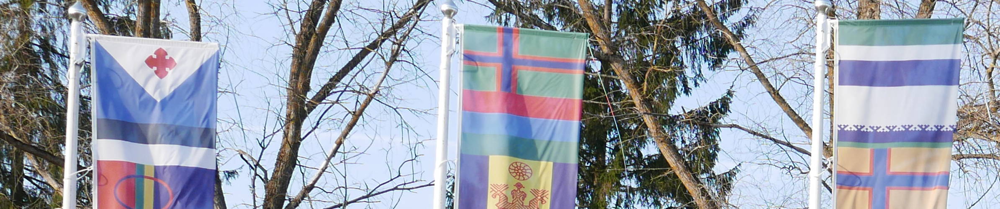
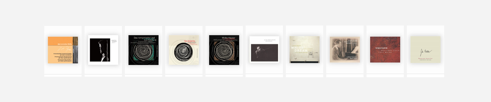

Finno-Ugric Data Sharing Space
Livonian, Karelian music database in the context of Finno-Ugric languages, material and immaterial heritage.
Click to visit

SKCMDb
Slovak Music Dataspace: conneting the Slovak Music Centre, SOZA (rights), the Music Fund, muisc libraries and music services.
Click to visit
Open Music Observatory
Connecting data, research, services about music in four pilars: economy, diversity, society and sustainability, and innovation.
Click to visit
About
Read more about the Open Music Observatory, and the Open Music Europe Horizon Europe Research and Innovation Action.
Click to visit